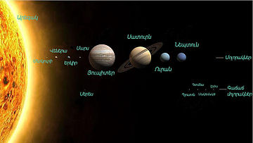
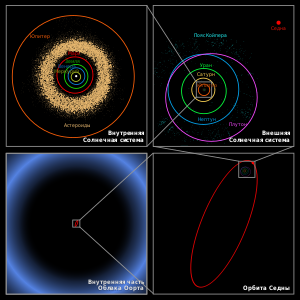

5. Արեգակնային համակարգի մոլորակները
Արեգակնային համակարգ
Արեգակնային համակարգ, մոլորակային համակարգ, որը գտնվում է Ծիր Կաթին գալակտիկայի մեջ[1] և բաղկացած է Արեգակից[2] և այլ երկնային մարմիններից, որոնք ձգողությամբ կապում են նրա ութ մոլորակները[3][4], նրանց 167 բնական արբանյակները[5], հինգ գաճաճ մոլորակները (Ցերերա, Պլուտոն, Հոմեա, Մակեմակե և Էրիս[6] և նրանց վեց բնական արբանյակները) և միլիարդավոր այլ փոքր մարմիններ։ Այս վերջինը բաղկացած է աստերոիդներից, Կոյպերի գոտու մարմիններից, գիսաստղերից, աստղաքարերից և տիեզերական փոշուց։
Արեգակնային համակարգը ձևավորվել է մոտ 4,57 միլիարդ տարի առաջ տիեզերական ձգողականության գազափոշային ամպի կոլապսի ճանապարհով[7]։
Արեգակնային համակարգի օբյեկտների զանգվածի մեծ մասը բաժին է ընկնում Արեգակին, մնացած մասը պարունակվում է ութ համամատաբար մեկուսացված մոլորակներում, որոնք ունեն գրեթե շրջանաձև ուղեծիր և դասավորված են գրեթե հարթ սկավառակի սահմաններում՝ խավարածրի հարթությամբ։

Արեգակնային համակարգի մոլորակները և գաճաճ մոլորակները։
Չորս ամենափոքր ներքին մոլորակներն են Մերկուրին, Վեներան, Երկիրը և Մարսը (նաև կոչվում են երկրային խմբի մոլորակներ), հիմնականում բաղկացած են սիլիկատներից և մետաղներից։ Չորս արտաքին մոլորակներն են՝ Յուպիտերը, Սատուրնը, Ուրանը և Նեպտունը (նաև կոչվում են գազային հսկաներ կամ պարզապես հսկա մոլորակներ), ավելի զանգվածեղ են, քան երկրային խմբի մոլորակները։ Արեգակնային համակարգի ամենամեծ մոլորակներ Յուպիտերն ու Սատուրնը գլխավորապես բաղկացած են ջրածնից և հելիումից, արտաքին ավելի փոքր Ուրանն ու Նեպտուն, ջրածնից և հելիումից բացի պարունակում են նաև մեթան և շմոլ գազ[8]։ Այդպիսի մոլորակները մտնում են առանձին դասի՝ «սառցային հսկաների» մեջ[9]։
Արեգակնային համակարգում կան փոքր մարմիններով զբաղեցված երկու մարմիններ։ Աստերոիդների գոտին, որը գտնվում է Մարսի և Յուպիտերի միջև, կառուցվածքով համընկնում է երկրային համակարգի մոլորակների հետ, քանի որ կազմված է սիլիկատներից և մետաղներից։ Աստերոիդների գոտու խոշորագույն օբյեկտներ են համարվում թզուկ մոլորակ Սերեսը, Պալասը, Վեստան, և Հիգեան։ Նեպտունի ուղեծրից այն կողմ տեղավորված են տրանսնեպտունային մարմինները, որոնցից խոշորագույններն են՝ Պլուտոնը, Սեդնան, Հոմեան, Մակեմակեն, Կվավարը, Օրկը, Էրիսը, բաղկացած սառած ջրից, ամոնիակից և մեթանից։ Արեգակնային համակարգում գոյություն ունեն այլ փոքրագույն մարմինների պոպուլյացիաներ ևս, ինչպիսիք են մոլորակային քվազիարբանյակները և տրոյացիները, մերձերկրյա աստերոիդները, կենտավրոսները, դամոկլոիդները, ինչպես նաև համակարգով տեղափոխվող գիսաստղերը, երկնաքարերը և տիեզերական փոշին։
Արեգակնային քամին (Արեգակից պլազմայի հոսքը) միջաստղային միջավայրում առաջացնում է հելիոսֆերա անվանմամաբ պղպջակ, որը տարածվում է համակարգում մինչև ցրված սկավառակի եզրը։ Օորտի ամպը՝ երկարակյաց գիսաստղի աղբյուրը, կարող է տարածվել մոտավորապես հազար անգամ հելիոսֆերայից այն կողմ։
Արեգակնային համակարգը մտնում է Ծիր Կաթին գալակտիկայի մեջ։
Կառուցվածք
Արեգակնային համակարգի կենտրոնական օբյեկտն Արեգակն է՝ G2V սպեկտրալ շարքի գլխավոր հաջորդականության աստղը, դեղին թզուկ։ Արեգակի մեջ է կենտրոնացած համակարգի զանգվածի գերակշռող մասը (մոտ 99,866 %)։ Այն իր ձգողականության շնորհիվ պահում է մոլորակները և այլ տիեզերական մարմիններ, որոնք պատկանում են Արեգակնային համակարգին[10]։ Չորս ամենամեծ օբյեկտները՝ գազային հսկաները, զբաղեցնում են մնացած զանգվածի 99 % (ընդ որում, մեծ մասը բաժին է հասնում Յուպիտերին և Սատուրնին՝ մոտ 90 %)։
Արեգակի շուրջը առաջացած մեծ օբյեկտներից շատերը շարժվում են գրեթե մեկ հարթությամբ, որը կոչվում է էկլիպտիկ հարթություն։ Ընդ որում, գիսաստղերը և Կոյպերի գոտու օբյեկտները սովորաբար օժտված են այդ հարթությունների նկատմամբ մեծ թեքության անկյուններով[11][12]։
Բոլոր մոլորակների և այլ օբյեկտների մեծամասնությունը շարժվում է Արեգակի շուրջը Արեգակի շարժման մի ուղղությամբ (եթե դիտելու լինենք Արեգակի հյուսիսային բևեռից, ապա՝ ժամացույցի սլաքի հակառակ ուղղությամբ)։ Կան բացառություններ, օրինակ՝ Գալեա գիսաստղը։ Ամենամեծ անկյունային արագությամբ օժտված է Մերկուրին, որը հասցնում է Արեգակի շուրջը կատարել մեկ ամբողջ պտույտ 88 երկրային օրվա ընթացքում։ Իսկ ամենահեռու գտնվող մոլորակի՝ Նեպտունի պտտման պարբերությունը կազմում է 165 երկրային տարի։

Մոլորակների մեծ մասը պտտվում է իր առանցքի շուրջը՝ Արեգակի շուրջ պտտվելուն զուգահեռ։ Բացառություններ են կազմում Վեներան և Ուրանը, ընդ որում, Ուրանը պտտվում է գրեթե «կողքի վրա պառկած» (առանցքի թեքությունը գրեթե կազմում է 90°)։ Այս պտույտի ցուցադրության համար օգտագործում են հատուկ սարք՝ թելուրիում (լատ.՝ tellus՝ «Երկիր»)։
Արեգակնային համակարգի շատ մոդելներ պայմանականորեն ցույց են տալիս մոլորակների ուղեծրերը հավասար ժամանակամիջոցների ընթացքում, սակայն, իրականում, փոքր բացառությամբ, որքան հեռու է մոլորակը կամ բևեռը Արեգակից, այնքան մեծ է այդ մոլորակի և նախորդ մոլորակի ուղեծրերի միջև հեռավորությունը։ Օրինակ՝ Վեներան գտնվում է Արեգակից մոտ 0.33 ա.մ. ավելի հեռու, քան Մերկուրին, այն դեպքում, երբ Սատուրնը գտնվում է 4.3 ա.մ. ավելի հեռու, քան Յուպիտերը, իսկ Նեպտունը 10.5 ա.մ. ավելի հեռու, քան Ուրանը։ Արվել են փորձեր ուղեծրերի միջև հեռավորությունների որոշման և մոդելավորման համար (Տիցիուս-Բոդեի օրենք)[13], սակայն ոչ մի տեսություն համաշխարհային լայն ճանաչման չի հասել։
Օբյեկտների ուղեծրերը Արեգակի շուրջը նկարագրվում են Կեպլերի օրենքներով։ Այդ օրենքների համաձայն՝ յուրաքանչյուր օբյեկտ շարժվում է էլիպտիկ ուղեծրով, որի կիզակետերից մեկում գտնվում է Արեգակը։ Արեգակին ավելի մոտ գտնվող օբյեկտների (մեծ կիսաառանցքի փոքր չափսեր ունեցողների) համար մեծ է պտտման անկյունային արագությունը, այդ իսկ պատճառով, կարճ է պտտման պարբերությունը (տարի)։ Էլիպտիկ ուղեծրի վրա օբյեկտի հեռավորությունը Արեգակից փոխվում է տարվա ընթացքում։ Ուղեծրի վրա Արեգակին ամենամոտ կետը անվանում են պերիգելիա, իսկ ամենահեռացվածը՝ աֆելիա։ Յուրաքանչյուր օբյեկտ շարժվում է արագ իր պերիգալիայում, իսկ դանդաղ՝ իր աֆելիայում։ Մոլորակների ուղեծրերը մոտ են շրջանագծին, սակայն բազմաթիվ գիսաստղեր, աստերոիդներ և Կոյպերի գոտու օբյեկտներ ունեն լավ ձգված էլիպտիկ ուղեծրեր։
Արեգակնային համակարգի մոլորակներից շատերը ունեն սեփական համակարգեր։ Շատերը շրջապատված են արբանյակներով (արբանյակներից մի քանիսը նույնսիկ գերազանցում են իրենց չափերով անգամ Մերկուրիին)։ Մեծ արբանյակներից շատերը գտնվում են միաժամանակյա շարժման մեջ. նրանց մի կողմը միշտ ուղղված է դեպի մոլորակը։ Չորս խոշորագույն մոլորակները՝ գազային հսկաները, օժտված են նաև օղակներով, փոքր մասնիկների բարակ շերտով, որոնք պտտվում են իրար շատ մոտ ուղեծրերով։